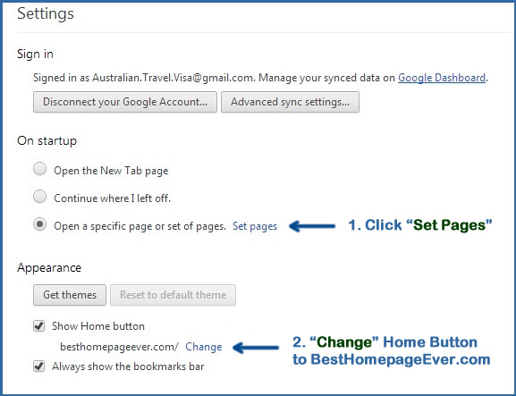
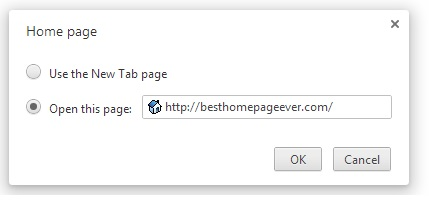

How to set your homepage in Chrome
Setting your homepage to
BestHomepageEver:
To set your home page:
Click the settings icon
on the browser toolbar, and select "Settings."
Click to match the below settings.


Click
here
to return to BestHomepageEver.
 on the browser toolbar, and select "Settings."
on the browser toolbar, and select "Settings."